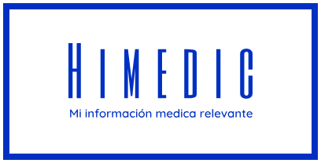

Organizaciones Civiles | Organizaciones Deportivas | Organizaciones Educativas |
|---|---|---|
|
Asociaciones culturales, religiosas, cívicas u cualquier otra que por su naturaleza convoque a sus asociados o miembros en sus instalaciones y desee disponer de este servicio para atención oportuna y segura de incidentes médicos, garantizando que la atención que se brinde en primera respuesta sea de calidad |
La practica de un deporte conlleva riesgos físicos accidentales por lo cual es necesario estar prevenidos ante cualquier situación que requiera atención medica de urgencia ya sea en las instalaciones donde se practica o en sedes foráneas de eventos y competencias. El servicio brinda la tranquilidad a los familiares que en caso de una emergencia medica recibirán una atención oportuna e informada. |
La responsabilidad del cuidado de los estudiantes dentro de las instalaciones educativas obliga a disponer de las mejores herramientas para su atención oportuna durante cualquier situación de emergencia medica; de esta manera complementan sus estrategias y procedimientos de atención y control. brindando información oportuna e indispensable a los prestadores de servicios médicos de emergencia. |
Empresas | Eventos / Viajes | Otros |
|---|---|---|
|
La calidad de atención medica que se brinda en una primera respuesta es determinante para salvaguardar la integridad de los trabajadores en una situación de emergencia medica, esta herramienta permite que la atención medica que se otorgue durante un accidente laboral sea oportuna y de mayor beneficio para los colaboradores de tu empresa. |
Podemos ofrecer una mejor calidad de servicio como organizadores de viajes y eventos si disponemos de una herramienta que nos permite ofrecer una mejor atención medica a nuestros usuarios en caso de una emergencia. Estar informados de los padecimientos y necesidades medicas de nuestros usuarios en caso de un accidente o urgencia le garantiza recibir la mejor atención medica responsiva |
La información medica relevante es una valiosa herramienta para garantizar diagnósticos médicos oportunos y eficientes. Si tu actividad requiere trabajar con personas en cualquier ámbito, asegúrate que en caso de accidente o emergencia dispongan de este servicio para salvaguardar su vida y garantizarles que la atención medica que reciban contara con esa información |
| PRIMERA VERSION 1.0 |